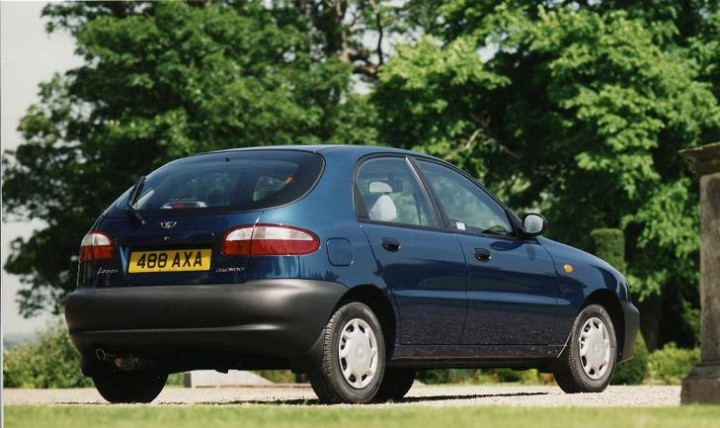

Daewoo i FSO – najważniejsze wydarzenia z historii:
1996 Na bazie FSO powstaje Daewoo-FSO. Koreańczycy dysponują większością udziałów. Jednym z elementów strategicznych kontraktu jest daleko idący plan modernizacji polskich zakładów oparty na koreańskich inwestycjach, których wartość ma przekroczyć miliard dolarów.
1997 Debiutuje Daewoo Lanos. Przy okazji zmodernizowano Poloneza.
1999 W pierwszym kwartale debiutuje Polonez kombi. W czwartym – Daewoo–FSO rozpoczyna produkcję Matiza i Nubiry.
2000 Debiutuje Lanos 1.4 oraz 1.6 w wersji stylizacyjnej Sport. Oficjalnie fabryka rozszerza ofertę o wersję z LPG.
2001 W FSO rozpoczyna się montaż Vana Tacuma z części sprowadzanych z Korei.
2002 Koniec produkcji Poloneza
2003 Bankructwo Daewoo w Korei. Na mocy specjalnych umów „Żerań” utrzymuje prawa do produkcji Lanosa i Matiza. Zmienia się jednocześnie nazwa zakładu – zamiast Daewoo – FSO powstaje FSO S.A.
2005 Ukraińska firmą ZAZ przejmuje większościowy kapitał w FSO. Większość Lanosów i tak trafia na eksport na wschód.
2007 Debiutuje Lanos Plus. W styczniu FSO wyczerpało limitowaną pulę Matizów jakie mogło wyprodukować na mocy umowy. Model został zastąpiony przez Chevroleta Aveo – na mocy odrębnej umowy z GM.